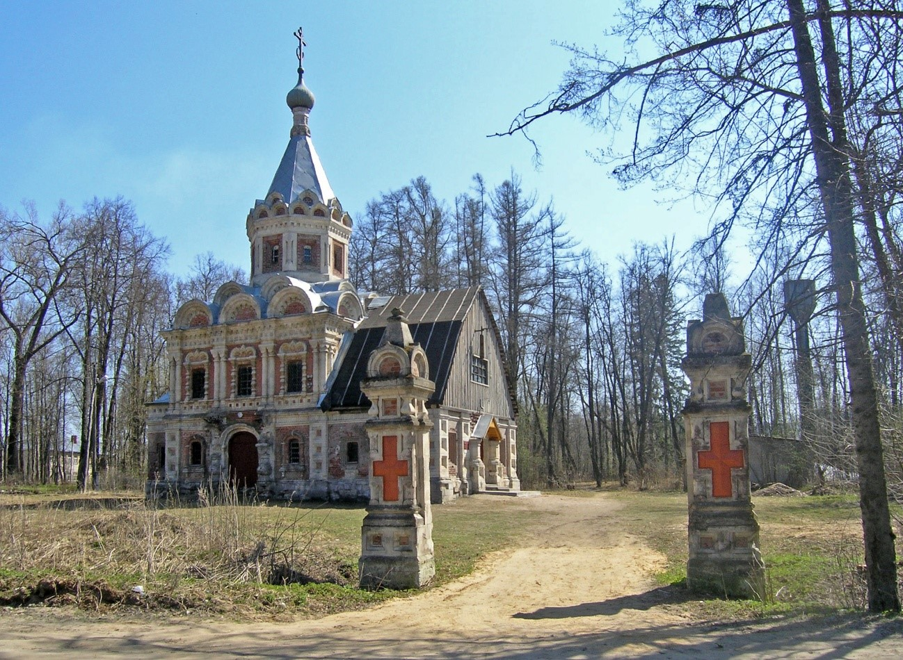

Усадьба В.С. Храповицкого в пос. Муромцево
Одним из притягательных объектов туризма Судогодского района является усадьба Владимира Семеновича Храповицкого. Получив в наследство земли, хозяин смог устроить уникальный в России дворцово-парковый комплекс. Владимир Семенович был лейб-гусаром и руководил телеграфной службой императора. Он возглавлял дворянство Владимирской губернии и стал крупнейшим лесопромышленником.
Главный дом усадьбы построен по проекту талантливого архитектора Петра Бойцова. Романский стиль отсылал к французским замкам позднего средневековья и Ренессанса. Позже ансамбль завершился мощной четырехэтажной башней с соответствующими украшениями, что придало особняку своеобразия и неповторимости.
Внутри было более 80 комнат, которые, как и в императорских дворцах, отделывались в своем стиле: розовая, голубая, малахитовая, янтарная и т.д. Мебель и украшения привозились именитых фирм: Шмидт, Эберт, Фаберже. В Муромцево была собрана богатая коллекция картин и гобеленов, оружия и рыцарских доспехов. Часть предметов экспонируется во Владимиро-Суздальском музее-заповеднике. Жилье было устроено с комфортом: в доме было электричество, горячая вода, центральное отопление, телефон и телеграфная станция.
Единый стиль архитектор попытался сохранить и в хозяйственных постройках. Комплекс каретного, скотного и конного дворов, которые сначала видели пораженные красотой гости Владимира Семеновича, принимали за усадьбу. Каким же сильным был восторг гостей, когда они проезжали через парк к особняку?!
От дома каскадом спускались пруды. На берегу главного пруда устроен лодочный павильон в голландском стиле. Здесь хранились лодки и яхты. Парк напоминал три европейских страны: Италию, Францию и Англию. Фруктовый сад насчитывал несколько сотен деревьев, среди них были абрикосы, персики и редкие сливы. За парком располагался театр, выполненный в миниатюрной копии Мариинского театра. С устройством железной дороги появились необычные здания станций. Последней постройкой усадьбы стал храм святой мученицы царицы Александры в псевдорусском стиле.
После революции владелец эмигрировал в Европу, где скончался в немецком городе Висбадене. В начале 1920-х годов в усадьбе разместился техникум лесного и сельского хозяйства. Постепенно постройки ветшали, приходили в запустение и растаскивались местным населением. После нескольких пожаров внутреннее убранство было уничтожено.
В 2014 году усадьба перешла в оперативное управление Владимиро-Суздальского музея-заповедника. Спустя год в здании лодочной станции открылась экспозиция, посвященная имению Храповицкого. В настоящее время ведутся восстановительные и реставрационные работы, которые откроют туристам привлекательный мир уникальной усадьбы.
Адрес: Судогодский район, пос. Муромцево.
Режим работы: среда-пятница с 10:00 до 16:00, суббота-воскресенье с 10:00 до 17:00, понедельник-вторник – выходной.

Дом усадьбы В.С. Храповицкого. Начало XX века.
Интерьеры дома Храповицкого. Начало XX века.
Комплекс хозяйственных построек. Начало XX века.
Железнодорожная станция Храповицкая-2. Начало XX века.

Храм святой мученицы царицы Александры. Современный вид.